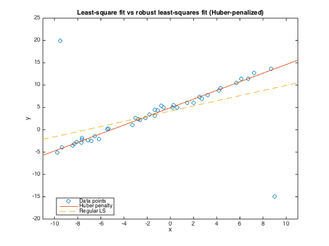

% Section 6.1.2, Figure 6.5 % Boyd & Vandenberghe "Convex Optimization" % Original by Lieven Vandenberghe % Adapted for CVX by Joelle Skaf - 09/07/05 % % Compares the solution of regular Least-squares: % minimize sum(y_i - alpha - beta*t_i)^2 % to the solution of the following: % minimize sum( phi_h (y_i - alpha - beta*t_i)^2 ) % where phi_h is the Huber penalty function, (t_i,y_i) are data points in a % plane. % Input data randn('seed',1); rand('seed',1); m=40; n=2; A = randn(m,n); xex = [5;1]; pts = -10+20*rand(m,1); A = [ones(m,1) pts]; b = A*xex + .5*randn(m,1); outliers = [-9.5; 9]; outvals = [20; -15]; A = [A; ones(length(outliers),1), outliers]; b = [b; outvals]; m = size(A,1); pts = [pts;outliers]; % Least Squares fprintf(1,'Computing the solution of the least-squares problem...'); xls = A\b; fprintf(1,'Done! \n'); % Huber fprintf(1,'Computing the solution of the huber-penalized problem...'); cvx_begin quiet variable xhub(n) minimize(sum(huber(A*xhub-b))) cvx_end fprintf(1,'Done! \n'); % Plots figure(1); hold off plot(pts,b,'o', [-11; 11], [1 -11; 1 11]*xhub, '-', ... [-11; 11], [1 -11; 1 11]*xls, '--'); axis([-11 11 -20 25]) title('Least-square fit vs robust least-squares fit (Huber-penalized)'); xlabel('x'); ylabel('y'); legend('Data points','Huber penalty','Regular LS','Location','Best'); %print -deps robustls.eps
Computing the solution of the least-squares problem...Done! Computing the solution of the huber-penalized problem...Done!
